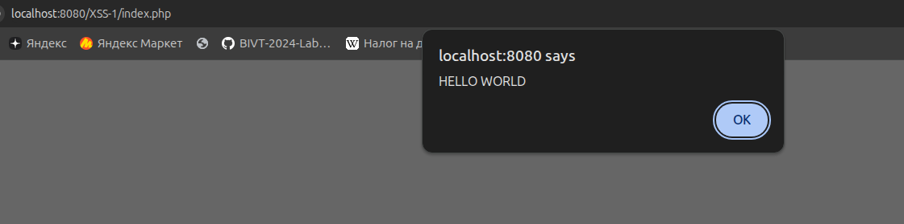
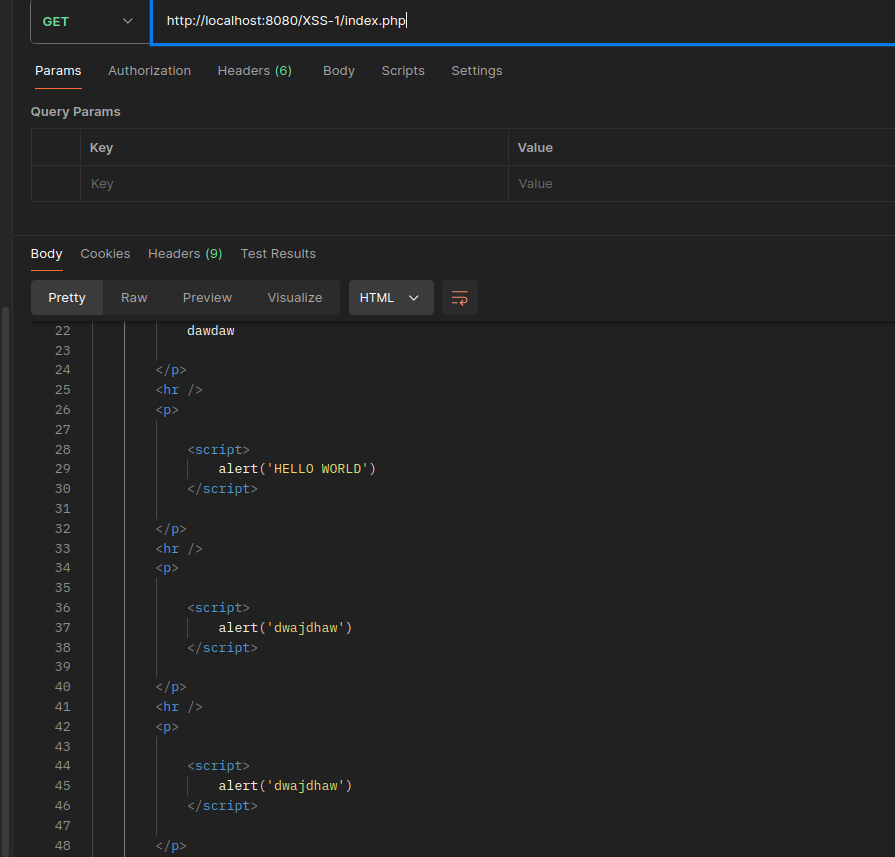

Уязвимый компонент: Система управления делами для юридических клиник ClinicCases (версия 7.3.3).
Описание: Множественные уязвимости типа XSS в ClinicCases версии 7.3.3 позволяют неавторизованным злоумышленникам внедрять произвольный JavaScript-код с помощью создания вредоносной ссылки. Это может привести к захвату учетной записи путем кражи токенов сессии.
Для чего используется: Это специализированная open-source система Она позволяет вести базу данных клиентов, отслеживать рабочее время сотрудников, хранить документы по делам и организовывать совместную работу юристов.
Функционал: Предоставляет веб-интерфейс для регистрации кейсов, управления календарем и формирования отчетов. Уязвимость была обнаружена в механизме обработки URL-параметров, что позволяло неавторизованному злоумышленнику украсть сессионные токены сотрудников.
Уязвимый компонент: Плагин Marmoset Viewer для CMS WordPress.
Описание: Плагин Marmoset Viewer для WordPress версии до 1.9.3 не выполняет надлежащую очистку, проверку или экранирование параметра 'id' перед его выводом обратно на страницу. Это приводит к возникновению уязвимости типа XSS.
Для чего используется: Этот PHP-плагин предназначен для интеграции 3D-сцен и моделей, созданных в программе Marmoset Toolbag, непосредственно в статьи или страницы сайта на WordPress.
Функционал: Плагин добавляет шорткоды и специальный плеер, который позволяет посетителям сайта вращать и рассматривать 3D-объекты в реальном времени.
Согласно данным cve.ord за 2021 год общее количество CVE - 20161 C 2021 по 2024 год общее количество CVE, связанных с XSS - 11245
Ссылка на истоник(XSS 2021-2024)
Переходим на http://localhost:8080/XSS-1/index.php.
Видим окошко для загрузку комментов
Пишем в окошко скрипт для вывода фразы;
<script>alert('HELLO WORLD')</script>

Скрипты также добавились в код страницы. Код вставился в страницу в изначальном состоянии

То есть при каждом обновлении скрипты выполнятся заново
Эта уязвимость называется Межсайтовый скриптинг (Cross-Site Scripting,XSS).
Ее суть заключается в том, что приложение принимает данные от пользователя без должной проверки и санитизации. В результате браузер интерпретирует текст не как обычную строку, а как javascript код, и запускает его.
Меры предотвращения:
<, >, ", ', &)